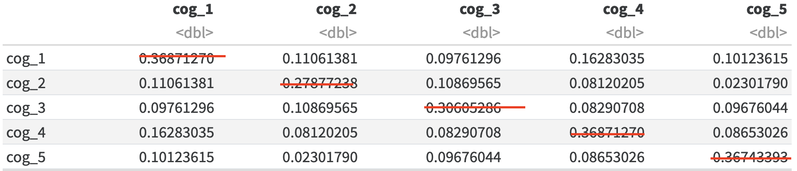
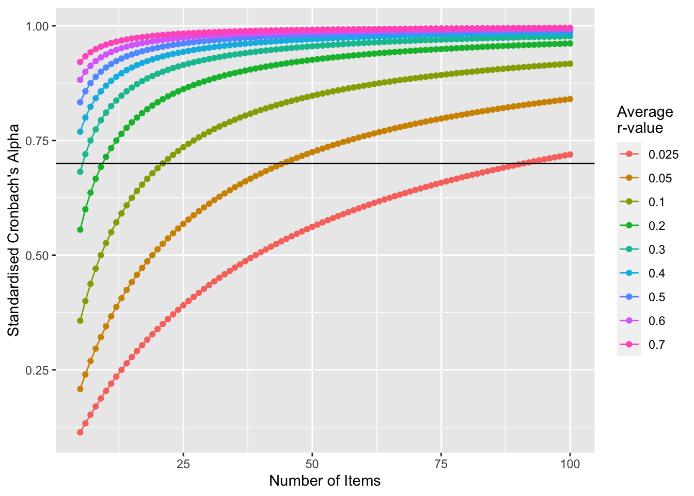

Cronbach’s alpha as an index of reliability of a scale
If you want to address whether a questionnaire or scale’s items are measuring the same underlying variable, it can be helpful to assess how much overlap there is between the items.
Let’s use some publicly available data to investigate this issue. The Empathy Quotient (Lawrence et al. 2004) is a self-report measure of how empathic someone is. There are a variety of data sets from people who have used this measure, so we’ll use some data from the following repository:
Whilst this is a general measure of empathy, empathy is a multifacted concept, so let’s focus on one of the types of empathy, cognitive empathy. This will involve focusing on just items associated with this facet. Note that the items for this are 14, 15, 29, 34 and 35. Let’s see how much covariance (see here for a reminder on covariance or shared variance) there is between the items:
eq <-read.csv("EQ_Data.csv")cog_eq <- eq[,c("Q14.processed", "Q15.processed", "Q29.processed", "Q34.processed", "Q35.processed")]# to improve readability, relabel the variablescolnames(cog_eq) <-c("cog_1","cog_2","cog_3","cog_4","cog_5")knitr::kable(data.frame(cov(cog_eq)))
cog_1
cog_2
cog_3
cog_4
cog_5
cog_1
0.3687127
0.1106138
0.0976130
0.1628303
0.1012361
cog_2
0.1106138
0.2787724
0.1086957
0.0812020
0.0230179
cog_3
0.0976130
0.1086957
0.3060529
0.0829071
0.0967604
cog_4
0.1628303
0.0812020
0.0829071
0.3687127
0.0865303
cog_5
0.1012361
0.0230179
0.0967604
0.0865303
0.3674339
Note that covariance of an item with itself is just variance, e.g. cog_1 with itself:
var(cog_eq$cog_1)
[1] 0.3687127
The above covariance matrix suggests all the items have some overlap - all associations are positive. To get a sense of how strongly they overlap a correlation matrix could be more useful, so let’s quickly look at that:
knitr::kable(data.frame(cor(cog_eq)))
cog_1
cog_2
cog_3
cog_4
cog_5
cog_1
1.0000000
0.3450170
0.2905797
0.4416185
0.2750438
cog_2
0.3450170
1.0000000
0.3721252
0.2532783
0.0719203
cog_3
0.2905797
0.3721252
1.0000000
0.2468024
0.2885426
cog_4
0.4416185
0.2532783
0.2468024
1.0000000
0.2350901
cog_5
0.2750438
0.0719203
0.2885426
0.2350901
1.0000000
To create an aggregate of whether these all seem to reliably be measuring the same construct, we can calculate the Cronbach’s Alpha, so let’s do that next. Cronbach’s Alpha can be calculated in a few ways. One way to conceptualise the cronbach’s alpha is:
\[
\frac{average Covariance Between Variables}{average(co)Variance}
\]
Using the table above: this is the average of all the cells that capture covariance between items:

(which captures how much the variables overlap) divided by the average of all variance of items with both with other items and with themselves
Based on a formula from (Field 2013) (Fourth edition, page 708)
\(N\) is the number of items
\(\bar{COV}\) is the average covariance between items (note that this does not include an items covariance with itself)
\(s_i\) is the standard deviation for a single item (remember that squaring it give
\(COV_i\) is the covariance for an item with another item
The bottom half together is the sum of a complete covariance matrix like the one directly above.
What’s nice about this formula, is that it’s quite easy to implement:
\(N^2\) is \(5^2\) which makes 25
\(\bar{COV}\) is the mean for the above covariance matrix after removing comparisons of items with themselves, so the mean of:
# we know that a correlation matrix will have 1 where an item is correlating with itself, so we'll create an index to skip those items:cov_itself =cor(cog_eq) ==1# now let's calculate the mean of the valid parts of the covariance matrixcov_df =data.frame(cov(cog_eq))cov_df[cov_itself] =""knitr::kable(cov_df)
cog_1
cog_2
cog_3
cog_4
cog_5
cog_1
0.110613810741688
0.097612958226769
0.162830349531117
0.101236146632566
cog_2
0.110613810741688
0.108695652173913
0.0812020460358057
0.0230179028132992
cog_3
0.097612958226769
0.108695652173913
0.0829070758738278
0.096760443307758
cog_4
0.162830349531117
0.0812020460358057
0.0829070758738278
0.0865302642796247
cog_5
0.101236146632566
0.0230179028132992
0.096760443307758
0.0865302642796247
mean_cov_df =mean(cov(cog_eq)[!cov_itself])
which would make 0.0951407
\(\sum{s_i^2}\) is the sum of the variance of each item. In our case, we already have that information when we calculated the “covariance” of each item with itself:
\(\sum{COV_i}\) is just the sum of the all the covariances, which actually are the same values we focus on for the mean:
knitr::kable(cov_df)
cog_1
cog_2
cog_3
cog_4
cog_5
cog_1
0.110613810741688
0.097612958226769
0.162830349531117
0.101236146632566
cog_2
0.110613810741688
0.108695652173913
0.0812020460358057
0.0230179028132992
cog_3
0.097612958226769
0.108695652173913
0.0829070758738278
0.096760443307758
cog_4
0.162830349531117
0.0812020460358057
0.0829070758738278
0.0865302642796247
cog_5
0.101236146632566
0.0230179028132992
0.096760443307758
0.0865302642796247
This makes it quite simple to calculate the whole of the bottom row, as we can sum the entire covariance matrix (that includes the variances of each item with itself):
sum(cov(cog_eq))
[1] 3.592498
Put together, we can calculate \(alpha\):
mean(cov(cog_eq)[cor(cog_eq) !=1])/# mean covariancemean(cov(cog_eq)) # mean of covariance and variance combined
[1] 0.6620788
Let’s compare this to the psych packages alpha function (note that it is likely that RStudio will have another alpha function active that is not cronbach’s alpha if you haven’t loaded the psych package!):
eq_alpha_output <- psych::alpha(cog_eq)knitr::kable(eq_alpha_output$total) # note that there other outputs available
Very similar logic to above, but instead of dividing the average covariate between items by the average covariate between and within items, we divide the average r value between items by the average r-value for both between and within items:
\[
\alpha = \frac{\bar{r_{b}}}{\bar{r}}
\]
\(\bar{r_b}\) being the average r-value between items
\(\bar{r}\) being the average r-value both between and within items
Cronbach’s Alpha vs. Standardised Cronbach’s Alpha
Remember that r-values are comparisons of covariates to the total variance (see here), and are thus standardised compared to covariates that are not divided by the total variance. One way to think about this is that correlations are standardised between -1 to 1, whereas variance has no lower or upper limit.
mean(cor(cog_eq)[cor(cog_eq) !=1])/# mean correlation between itemsmean(cor(cog_eq)) # mean of all correlations
[1] 0.662596
Which matches the value of std.alpha in the output in Table 1.
General benchmarks for Cronbach’s alpha
There are caveats to these benchmarks, and weird things that can happen with Cronbach’s alpha, but here are some broad benchmarks about how reliable your items are based on their \(\alpha\) value:
Less than .6 is unacceptable
.6 to .7 is mediocre
Greater than .7 is acceptable reliability
Greater than .9 suggests that your measure includes redundant items
Some warnings
More items in a measure generally means a higher CA, even if the associations between the items is consistent. For example, imagine we had the following correlation matrix:
mean(example_1_large[example_1_large !=1])/# mean correlation between itemsmean(as.matrix(example_1_large)) # mean of all correlations
[1] 0.4705882
Does this inflation of alpha get worse if the average associations between items are stronger or weaker?
To visualise how rapidly the alpha values increase with the number of items, and if this is a bigger or smaller problems if the average association is stronger or weaker, let’s calculate the alpha values you would get for a range of r-values (.1 to .9) and number of items (5 to 100):
library(ggplot2)alpha_inflation <-data.frame(item_n =rep(5:100,9),r_value = (rep(c(.025, .05, .1, .2, .3, .4, .5, .6, .7), each =96)),alpha =NA)for(i in1:length(alpha_inflation$item_n)){ this_r_value = alpha_inflation$r_value[i] this_r_value = alpha_inflation$item_n[i] this_example_cor_matrix =matrix( alpha_inflation$r_value[i], alpha_inflation$item_n[i], alpha_inflation$item_n[i] )for(j in1:alpha_inflation$item_n[i]){ this_example_cor_matrix[j,j] =1 } alpha_inflation$alpha[i] =mean(this_example_cor_matrix[this_example_cor_matrix !=1])/# mean correlation between itemsmean(as.matrix(this_example_cor_matrix)) # mean of all correlations}ggplot(data=alpha_inflation, aes(x=item_n, y=alpha, group=r_value, color=factor(r_value))) +geom_line()+geom_point() +xlab("Number of Items") +ylab("Standardised Cronbach's Alpha") +scale_color_discrete(name="Average \nr-value") +geom_hline(yintercept = .7, color ="black")

Figure 1: Visualisation of how an increased number of items inflates Cronbach’s Alpha even if the average association between items is kept consistent. Note that whilst this has been done on standardised Cronbach’s Alpha, the principle applies even for calculation of non-standardised cronbach’s Alpha. The black line is at a value of .7.
We can see above that the alpha value isn’t inflated hugely when the average correlation is already high, which makes sense as there isn’t much scope for it to be inflated. Measures with items with only weak associations are heavily influenced though. If you have a measure with 100 items, a Standardised Cronbach’s Alpha of .7 will be achieved even if the average \(r\) value is as low as .025. In this sort of situation, it might be more helpful to identify sub-factors within your measure using analysis like Principle Components Analysis or Confirmatory Factor Analysis.
Consolidation questions
Question 1
Cronbach’s Alpha is useful to check whether items in a measure are…
viewof cronbach_alpha_1_response = Inputs.radio(['valid','reliable']);correct_cronbach_alpha_1 ='reliable';cronbach_alpha_1_result = {if(cronbach_alpha_1_response == correct_cronbach_alpha_1){return'Correct! Specifically, whether they reliably measure the same construct. However, weird things can happen if multiple similar constructs are captured in the measure, so it can be helpful to conduct Principle Component Analysis first.'; } else {return'Incorrect or incomplete.'; };}
Question 2
Do you need to reverse code relevant items before conducting Cronbach’s Alpha?
viewof cronbach_alpha_2_response = Inputs.radio(['Yes','No']);correct_cronbach_alpha_2 ='Yes';cronbach_alpha_2_result = {if(cronbach_alpha_2_response == correct_cronbach_alpha_2){return'Correct! Otherwise the item will reduce the alpha value even if the item is reliably associated with other items (just going in the opposite direction).'; } else {return'Incorrect or incomplete.'; };}
References
Field, Andy. 2013. Discovering Statistics Using IBM SPSS Statistics. sage.
Lawrence, E. J., P. Shaw, D. Baker, S. Baron-Cohen, and A. S. David. 2004. “Measuring Empathy: Reliability and Validity of the Empathy Quotient.”Psychological Medicine 34 (5): 911–20. https://doi.org/10.1017/s0033291703001624.